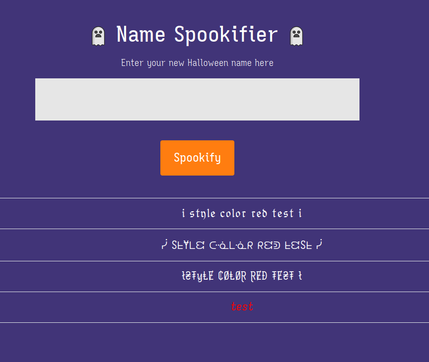
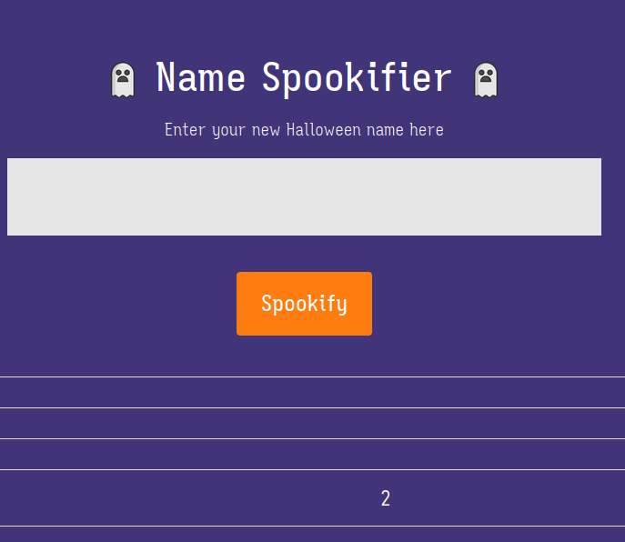
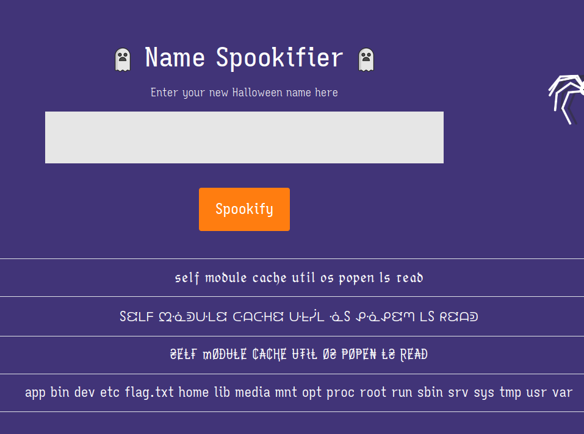

Spookifier
The website presents us with a text box where we can insert any kind of text.
After submitting it, it shows us a table with 4 rows, each one with stylized
text, except the last one. One of the obvious first things to try is injecting
HTML, something like <i style="color:red;">test</i>, which worked:

Easy to sense some kind of code injection in this challenge. If the web app
files are downloaded, it's possible to see that it was done in Python, using a
template engine called Mako. Similar to Jinja2, we can verify if we can inject
Python code. Let's test simple math by adding two numbers (${1+1}):

As expected, it worked. Therefore, we can use some known payloads for the Mako template engine:
${self.module.cache.util.os.popen("COMMAND_HERE").read()}
So, where it says COMMAND_HERE, we can just write any kind of shell command to
get the results. It's possible to use pwd, ls and cat to find and read the
flag.txt file, which is in the root directory:
